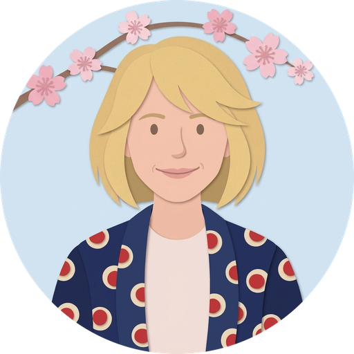
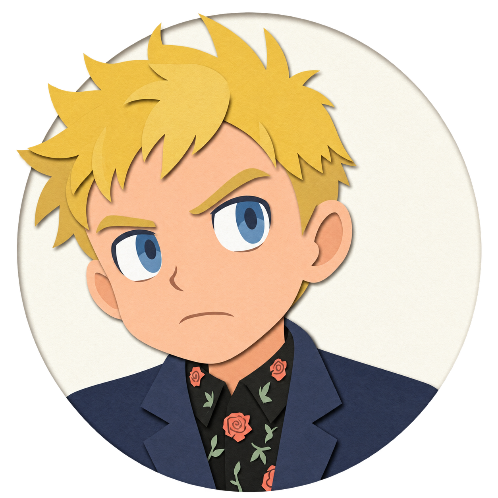

01 / workprivate assistant

hev mind
The company, within speaking distance. Plans, meetings, the deal pipeline, and the coding agents at work.
“What needs my attention today?”
plans / meetings / agent activity
// voice-first. yours.
Your work. Your day. Your next stop.
A dot gives you a voice into the things you care about, with its own tools and a personality that fits.
Built by hev mind. Headed for open source.
The working day.

The personal side.

A day of her own.

Along for the trip.
// meet the dots
Each dot starts with a person and something useful to do. These are the ones taking shape in my own work and life.
The company, within speaking distance. Plans, meetings, the deal pipeline, and the coding agents at work.
“What needs my attention today?”
My personal calendar, spending, and the mail I choose to forward. A place for the everyday details.
“What’s on my calendar tomorrow?”
Dasha’s calendar and creative work, together. Check the Instagram queue, look at blog traffic, and see what’s coming up.
“What’s scheduled for Instagram?”
Talk to a Travels with Charlie trip. Keep the itinerary close and ask about the day while you’re out in it.
“What’s the plan for today?”
Example questions show what each dot is for. Personal dots are private; this page does not open their accounts or conversations.
// what makes a dot
A dot gets its useful context from the sources you connect: a calendar, a trip, a set of documents, or your own tools.
Speak when your hands are full. Type when it’s quiet. Cards put the useful details on screen.
Action tools use a read-back and confirmation flow. Login checks and tool permissions live on the server.
// an open-source framework in the making
Build and run your own dot. Give it a persona, connect your tools, and make it look like yours. The framework handles voice and text, tool policy, cards, and phone installation.
The framework is headed for an Apache-2.0 open-source release. The repository is not public yet. The core uses standard web requests, with pluggable storage, identity, and traces.
the frameworkyour dot
hev dots
// your turn
Start with one part of your day you’d like to talk through.
Make your own when the source lands, or talk to me about building one together.